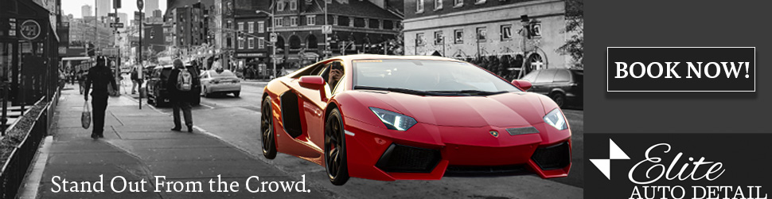
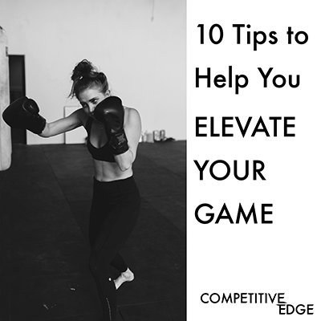
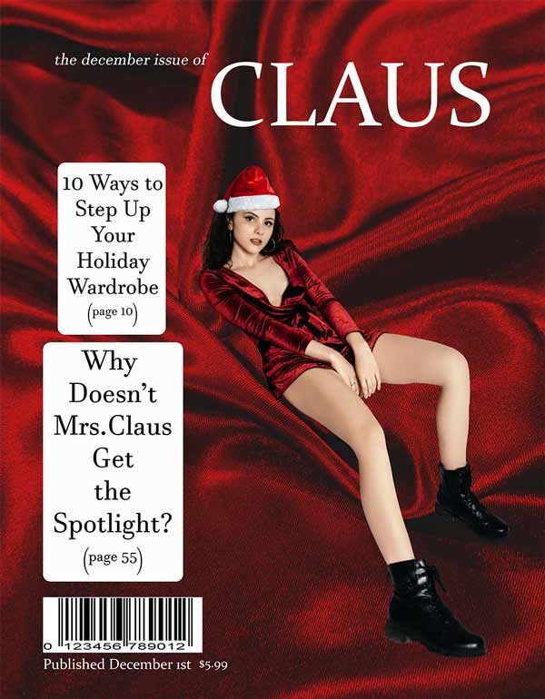
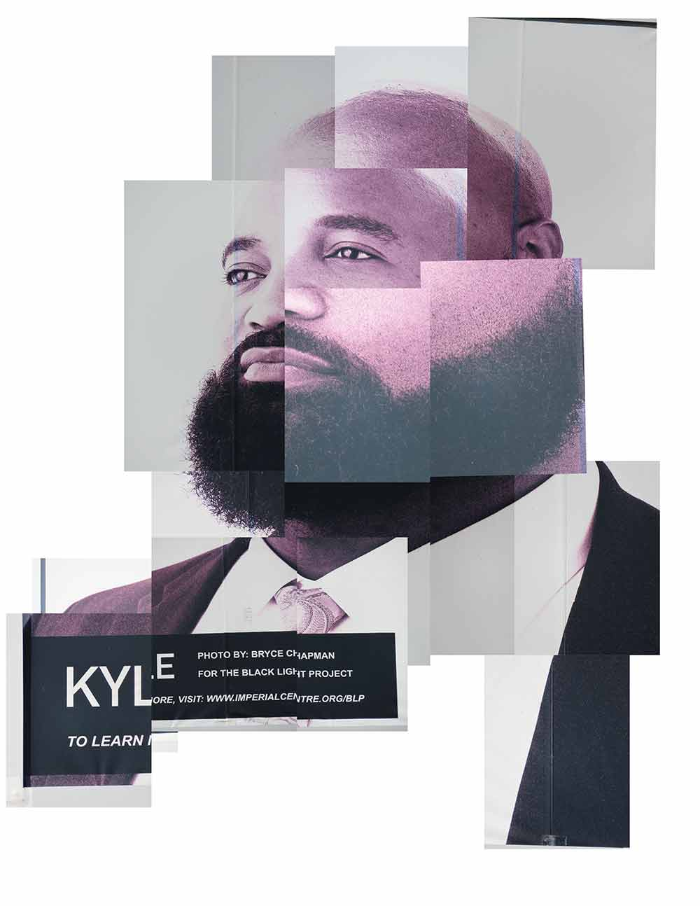
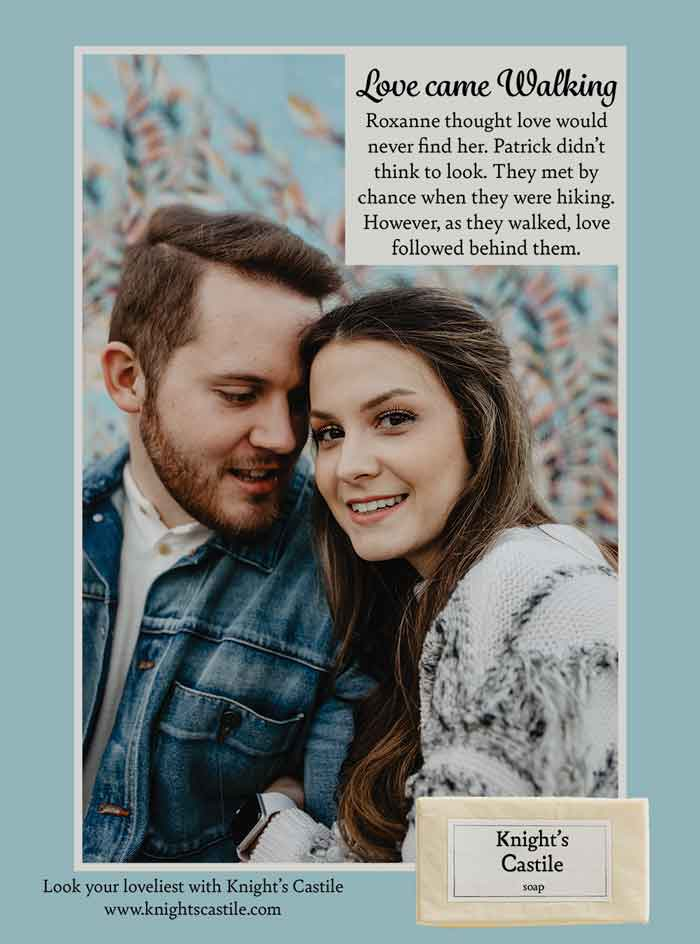
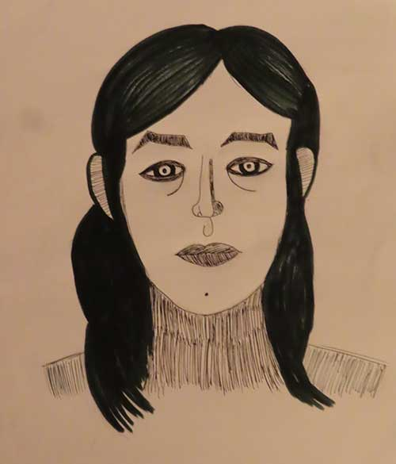

This project was focused on ads for a car detailing service. I focused the ad on the cars themselves, since they are what the business is about.

For one of my classes, we were tasked with creating a series of ads for a fictional sporting goods store. I wanted to emphasize competition and the intensity that sports can have.

The goal of this project was to create a magazine cover for a fictitious company that you created. It was near the holidays at the time, I decided to do a Christmas-themed cover. Instead of what you typically see for the holidays, I decided to do a high-fashion holiday.

This image was inspired by Hockney's composites. I took several pictures of a poster I saw of a man and compiled them together to recreate his face.

For this piece, I redesigned an old soap ad for the modern age. I included some elements that reference the original ad, such as the serif heading.

One of my classes asked me to draw a self-portrait. After many different renditions, I created this dramatic black and white version of myself.